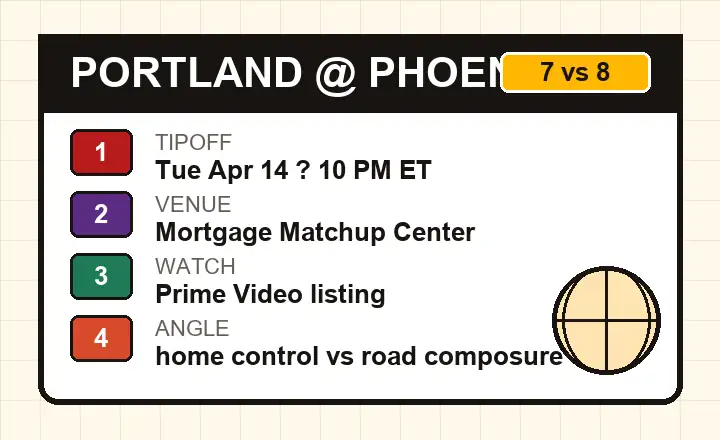

Game preview
Short notes on pace, late-game shot quality, home-court pressure, and why the first quarter can shape the night.
Open previewPortland visits Phoenix on Tuesday, April 14, 2026, in a game that matters without being an elimination game. The winner moves straight into the West playoff bracket, while the loser has to fight through one more pressure night.
This is a compact game hub built around the user intent I would have before tipoff: what time it starts, why the 7-vs-8 format matters, and what I would watch first when Portland tries to win on the road in Phoenix.
Short notes on pace, late-game shot quality, home-court pressure, and why the first quarter can shape the night.
Open previewDate, time, venue, broadcast note, and a clean reminder to re-check the official listing close to tipoff.
Open watch guideA simple explanation of what happens to the 7-vs-8 winner and why the loser is still alive.
Open format guidePhoenix has the home floor, a 25-16 home record in the current game listing, and the cleaner path if it controls the half-court rhythm. Portland's road formula is different: survive the early surge, avoid empty possessions, and make the game feel tight enough that one shooting run matters.
The part I would not ignore is the emotional shape of a 7-vs-8 game. It gives both teams a second chance if they lose, but the winner gets the prize everyone wants: less chaos, less travel, and a direct first-round place.

More from our sites
This page sits inside a wider set of live guides, recaps, and utility pages. Use the short list below when you want a few direct jumps without loading a crowded directory page first.
More from our sites
This page sits inside a wider set of live guides, recaps, and utility pages. Use the short list below when you want a few direct jumps without loading a crowded directory page first.